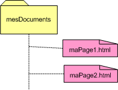
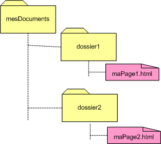

Introduction :
Npus abordons dans ce chapitre la raison du succès d'Internet : les liens qui tissent la toile universelle. Une définition permettra de comprendre ce qu'est un lien. Ensuite, nous verrons comment placer un lien dans une page ainsi que l'adressage de ce lien : de manière relative ou absolue. Enfin, nous expliquerons ce qu'est une ancre.
Définition :
Les liens hypertextes sont des liens qui permettent de créer une navigation à travers des sites Web. Le World Wide Web est entièrement basé sur la notion d'hypertexte. Dans le langage HTML, il est possible de transformer certains mots ou images d'une page web en référence vers une adresse. Lorsque l'on clique sur ces liens, l'utilisateur est renvoyé vers un autre document, plus bas dans la page, vers un site, un mail, une image, un son...
L'élément a :
Syntaxe :
Pour créer un lien hypertexte, on emploie la balise <a> (ancre) qui permet de signifier un lien vers une autre page Web. Un lien est constitué de deux parties : le départ (le texte permettant le click) et l'arrivée (où l'on veut diriger l'utilisateur). Le contenu de la balise <a> est cliquable sur la page Web.
L'atrribut href (hypertext reference) permet de spécifier au navigateur la destination du lien.
Théoriquement, on aura élt;a href="adresse_de_la_ressource"> mot-clé </a>.
Le navigateur affichera "mot-clé" en le soulignant pour signifier qu'il s'agit d'un lien. Lorsque l'utilisateur clique sur le "mot-clé", il est redirigé sur la page "adresse de la source".
L'élément a peut contenir que des éléments en ligne, des retours à la ligne et des images.
Penons un exemple pour placer un lien sur le site de l'IPL :
| Le code de la page HTML : | L'affichage par le navigateur : |
|---|---|
|
Mon école adorée est l'IPL.
|
On peut également placer une image dans l'élément a. Dans ce cas, l'image sera cliquable comme du texte.
| Le code de la page HTML : | L'affichage par le navigateur : |
|---|---|
|
Mon école adorée est l'
|
Href : chemin relatif - chemin absolu :
Introduction :
Dans la balise <a>, on doit spécifier l'adresse de la ressource du lien (hyperlink reference - href). Cette adresse peut prendre plusieurs formes : relative ou absolue.
Un chemin relatif est un chemin qui dépend de l'élément de départ tandis qu'un chemin absolu est le chemin complet de l'élément.
Petit exemple, si vous êtes au métro et qu'on vous demande le chemin de l'IPL, vous pouvez soit expliquer le chemin à partir du métro, genre "tout droit puis à gauche", soit vous dictez l'adresse complète de l'école "clos chapelle aux champs 43 à 1200 Bruxelles". Si vous indiquez le chemin à partir du métro (gauche, droite, etc), vous faites de l'adressage relatif car votre explication dépend de votre point de départ. Si vous détaillez l'adresse de l'école, vous faites de l'adressage absolu car il s'agit de la position de l'école peu importe votre position à vous.
En informatique, c'est plus ou moins la même chose, il y a le chemin relatif et le chemin absolu. En bref, une adresse de la forme suivante "unePage.html" est un chemin relatif; effectivement, le navigateur cherchera la page "unePage.html" dans le dossier courant, c'est-à-dire le dossier dans lequel se trouve la page à partir de laquelle le lien est effectué. Par contre, l'adresse de la ressource "http://www.ipl.be/" est un chemin absolu.
On utilise des chemins relatifs pour faire des liens vers des pages du même site web, alors qu'on utilise des chemins absolus pour faire des liens vers d'autres sites.
Le chemin absolu :
Pour référencer un site, c'est-à-dire pour faire un lien externe, il faut préciser l'adresse (ou URL) complète, c'est-à-dire le protocole à utiliser pour les atteindre (http, ftp, ...), le nom du serveur qui les héberge, le chemin d'accès sur le serveur, et enfin leur nom. Ce point est détaillé plus tard dans la section intitulée "Mettre un site en ligne".
Par exemple, pour obtenir la page du programme du cours du département informatique, il faut utiliser l'url suivante : "https://progcours.vinci.be/cocoon/programmes/E1BINV01_C.html". Effectivement, si vous encodez le lien
<a href="https://progcours.vinci.be/cocoon/programmes/E1BINV01_C.html">département informatique de l'école</a>, vous obtenez le lien suivant : Programme de cours du département informatique de l'IPL.
Le chemin relatif :
Un chemin relatif permet de créer un lien entre fichiers d'un site (dit lien externe). Il s'agit d'un lien qui connecte des fichiers situés sur un même serveur web. Il n'est pas utile, pour relier ces fichiers, de préciser leur adresse (ou url) complète. En adressage relatif, le chemin du fichier visé est établi à partir du dossier du fichier appelant (celui dans lequel on a inséré le lien). L'adressage relatif se résume alors à sa plus simple expression puisque, pour relier deux fichiers se trouvant dans le même dossier, l'adresse à mentionner correspondra tout simplement au nom du fichier visé.
Souvent, il est nécessaire de spécifier un chemin parmi les dossiers pour accéder au fichier désiré. Si celui-ci se trouve dans un dossier contenu dans le dossier du fichier source ou dans un sous-dossier ou un sous-sous-dossier..., il suffit de mentionner tous les dossiers séparés par "/ ainsi que le fichier à lier. Parfois, le fichier à référencer se trouve dans un dossier en dehors du dossier courant, il faut alors aller dans le dossier au-dessus (ou celui encore au-dessus) pour retrouver la ressource. Lorsqu'on remonte d'un niveau, on va vers le dossier parent. Et en informatique, un dossier n'a qu'un dossier parent. Pas besoin donc de dire où on va quand on remonte d'un niveau, on remonte toujours chez son parent, c'est tout. Cette opération est traduite par "../". Si on doit remonter de deux niveaux (chez le grand-parent), on aura "../../". Si on a trois niveaux, on aura "../../../", etc.
Par exemple, le dossier mesDocuments contient deux fichiers : maPage1.html et maPage2.html (voir ci-contre). Pour créer un lien à partir du fichier maPage1.html vers maPage2.html, il suffit de référencer la page du lien, c'est-à-dire maPage2.html puisque les deux fichiers se trouvent dans le même dossier. Concrètement, pour insérer un lien dans maPage1 vers maPage2, on écrira l'élément suivant : <a href="maPage2.html">un lien vers maPage</a>.
Prenons un exemple plus complexe, le dossier mesDocuments contient deux dossiers : dossier1 et dossier2 comme montré dans la figure ci-contre, à droite. Le dossier1 contient un fichier maPage1.html et le dossier2 contient un fichier maPage2.html. Pour créer un lien dans le fichier maPage1.html vers le fichier maPage2.html, il ne suffit plus de mentionner maPage2.html car les deux fichiers ne se trouvent pas dans le même dossier.
Comment faire ?
L'adressage se fait relativement au dossier parent du dossier courant; c'est-à-dire celui qui contient maPage1.html à partir de laquelle le lien va être effectué. Il faut donc remonter dans l'arborescence des dossiers jusqu'à trouver un parent commun entre le fichier source et le lien. Concrètement, pour insérer un lien dans maPage1 vers maPage2, on écrira l'élément suivant : <a href="../dossier2/mapage2.html">un lien vers maPage</a>.
Avantages de l'adressage relatif :
Dans un site web, le fait d'exprimer les liens de manière relative et non absolue facilite la gestion de ce site. Effectivement, mettre en ligne un site ainsi conçu ou encore changer le site d'adresse sera similaire à un simple copier-coller. Pourquoi ?
Tout d'abord, sachez que les chemins absolus sont plus difficiles à gérer : en cas de déplacement du site ou encore changement de nom, il faut modifier toutes les URL. De plus, une URL est beaucoup moins lisible qu'un chemin relatif car elle est plus longue.
Ensuite, lors d'un transfert de fichiers sur le serveur de l'hébergeur, il faudrait, en cas d'adressage absolu, modifier toutes les URL puisque le site se trouvera dans un dossier dans un autre espace mémoire.
Les autres attributs de <a> :
La balise <a> peut être garnie d'autres attributs que la source du lien. Outre les attributs déjà connus comme id ou class, on peut spécifier les attributs suivants :
- title :
-
On peut spécifier un attribut title dans l'élément a qui permet de donner une description textuelle de la page vers laquelle mène le lien. Par exemple,
<a href="http://www.ipl.be" title="Le site de l'école vous informe sue le programme des cours."> Le site de l'IPL</a>Dans la plupart des navigateurs, l'attribut title s'affiche dans une info-bulle qui apparaît lors du passage de la souris au-dessus du lien. Pensez que les navigateurs pour les mal-voyants lisent à haute voix la valeur que vous lui avez donnée.
- target :
-
Par défaut, le navigateur se contente d'ouvrir le lien dans la fenêtre courante.Si on désire que le lien soit ouvert dans une autre fenêtre, il faut spécifier explicitement dans l'attribut target de <a> la valeur _blank.
Concrètement, pour créer un lien vers le site de l'IPL qui s'ouvre à chaque fois dans une nouvelle fenêtre, on précisera l'élément de la manière suivante :
<a target="_blank" href="http://www.ipl.be">IPL</a>_blank signifie qu'on ouvre une nouvelle fenêtre à chaque fois. Si une page possède plusieurs liens avec un attribut target qui vaut _blank, à chaque click une nouvelle fenêtre s'ouvrira. Si on désire que tous les liens d'une page s'ouvre dans la même fenêtre, on peut donner une autre valeur à l'attribut target et si tous les liens de la page spécifient dans target cette valeur, alors ils s'ouvriront tous dans la même fenêtre.
Par exemple, sur une page d'index de recette de cuisine, on désire que lorsque l'utilisateur sélectionne une recette s'affiche dans une nouvelle fenêtre. Si l'utilisateur sélectionne une autre recette, ce sera toujours la même fenêtre qui sera utilisée. Pour ce faire, on indique un target identifique pour tous les éléments a.
Par exemple : Le code de la page HTML : L'affichage par le navigateur : <p>En dessert au choix :</p> <ul class="gateau"> <li><a target="recette" href="https://www.marmiton.org/recettes/recette_gateau-au-chocolat-type-brownie_18983.aspx"> Brownies au chocolat</a></li> <li><a target="recette" href="https://www.marmiton.org/recettes/recette_cake-aux-amandes-au-miel-et-a-la-cannelle_231932.aspx"> Cake aux amandes et miel</a></li> <li><a target="recette" href= "https://www.marmiton.org/recettes/recette_bananes-flambees-simples-et-tres-rapides_72081.aspx"> Des bananes flambées</a></li> </ul>En dessert au choix :
Ancres :
L'attribut id (name anciennement) permet de créer une ancre de destination qui permet de faire un lien vers un endroit précis dans une page. Il suffit de le préciser dans l'élément à ancrer, c'est-à-dire pour préciser la destination, et de placer cet id à la fin du chemin du lien.
Voici un exemple de lien vers une ancre de destination placée dans le chapitre HTML sur l'écriture de commentaires :
<h4 id="intro">Introduction<h4>Il est également possible de créer des liens vers une ancre de destination qui se trouve sur la même page; il suffit alors de mentionner comme chemin "#idDeLAncreDeDestination"
Voici un exemple de lien vers cette ancre de destination :
| Le code des pages HTML : | L'affichage par le navigateur : |
|---|---|
|
Placer un Retour à l'introduction ...
|
Les liens d'accès rapide :
Les liens d'accès rapide, ou liens d'évitement, permettent d'accéder directement à un élément d'intérêt de la page. C'est généralement le contenu principal de la page. Mais ils peuvent également donner accès au moteur de recherche.
<!DOCTYPE html>
<html lang="fr">
<head>
...
</head>
<body>
<nav>
<a href="#main" class="quickAccess">contenu</a>
<a href="#search" class="quickAccess">recherche</a>
</nav>
...
<div id="search" role="search" tabindex="-1">
...
</div>
...
<main id="main" role="main" tabindex="-1">
...
</main>
</body>
</html>D'aucuns pensent qu'ils sont faits pour les personns utilisant un lecteur d'écran. Ce n'est pas le cas, puisque les lecteurs d'écran permettent d'accèder à la balise <main> ou à l'élément ayant le rôle search. Les liens d'accès rapide sont principalement destinés aux utilisateurs naviguant sans souris. Pour un internaute utilisant un contacteur au souffle, il lui permettent d'éviter de nombreux efforts pour atteindre ce qu'il cherche. Sur certains sites, il est nécessaire de tabuler une trentaine de fois pour atteindre le contenu, et cela à chaque page. Il ne faut donc surtout pas mettre un attribut hidden sur un lien d'accès rapide ou le faire disparaître avec display: none. Il ne servirait à rien du tout !
Nous avons donc deux choix : soit l'afficher en permanence (mais cela risque de ne pas plaire aux graphistes), soit le faire apparaître au moment où il obtient le focus. Dans ce cas, au premier appui sur la touche [Tab], le lien apparaît. L'utilisateur appuie sur sur [Entrée] et il arrive au contenu principal. Il faut alors ajouter quelques lignes de code CSS pour cela :
.quickAcess {
position: absolute !important;
top: -1000px;
}
.quickAccess:focus {
top: 0px;
color: #FFF;
background-color: #000;
}Initialement, le lien n'a pas le focus. L'astuce pour qu'il soit présent tout en étant invisible est de le positionner en dehors de la zone d'affichage. Lorsqu'il obtient le focus, il est déplacé dans la zone d'affichage.
Les documents à télécharger :
Sur un site internet, il est classique de proposer des documents en téléchargement (rapports, notices d'information...).
La première question à se poser est l'accessibilité de ces documents. Un document scanné ou transformé en PDF à l'aide d'une imprimante virtuelle est complètement inaccessible.
La première solution est d'utiliser des formats accessibles. HTML est un format parfaitement accessible à condition de respecter les règles du WCAG.
Les formats bureautiques d'Office (.docx, .pptx, .xslx...) ou leurs équivalents libres (.odt, .odp, .ods...) sont parfaitement accessibles à condition de respecter les mêmes règles que pour un site internet (utiliser des titres, un contraste suffisant...) et de saisir les alternatives aux images.
Le format PDF est accessible à condition que la source ayant remis de le produire soit accessible et que la conversion effectuée conserve bien le texte en tant que texte. Par exemple, sous Office, il faut pour cela enregistrer (menu Fichier -Enregistrer sous) au fomat PDF en cochant Balises de structure de documents pour l'accessibilité dans les options.
Il n'est pas toujours possible de rendre accessibles les documents en téléchargement. Parce que vous n'en êtes pas l'auteur ou que le format ne le permet pas, par exemple. Il est alors nécessaire de proposer une alternative pour accéder à leur contenu. Cela peut être fait dans une page avec du code HTML reprenant tout le contenu sous forme de texte.
Il est également important d'indiquer à l'utilisateur le format du document ainsi que son poids, avant le téléchargement. Ainsi, il pourra renoncer s'il n'est pas en mesure de lire ce type de fichier ou si le fichier est trop volumineux. Et si vous proposez plusieurs formats, il pourra choisir celui qui lui convient le mieux.
Il est également important de préciser si le document est dans une langue différente de celle du site. Cela évite un téléchargement inutile si l'internaute ne parle pas cette langue.
Les nouvelles fenêtres :
Des utilisateurs rencontrent parfois des difficultés dans leur navigation lorsqu'ils utilisent un lien ouvrant un nouvel onglet : ils ont du mal à retourner sur la page précédente, ou encore ils ne se rendent pas compte qu'ils ne sont pas sur le même site en raison d'un champ de vision très petit par exemple. Il est donc souhaitable d'indiquer que le lien ouvre un nouvel onglet.
Beaucoup de sites utilisent une petite icône pour cela (exemple : ). Le problème est que cette icône peut perturner le lecteur dyslexique. Il est préférable d'ajouter un attribut title="nouvelle fenêtre" sur le lien. L'attribut title permet d'afficher l'information sous forme d'une infobulle, il constitue la description du lien. Et cette information est restituée par un lecteur d'écran.
Exemple :
Pensez à valider vos pages web à l'aide du <a href="https://validator.w3.org/nu/" title="nouvelle fenêtre" target="_blank" rel="noopener">validateur du W3C</a>.Voici ce qu'etend l'utilisateur lorsque le lien est restitué par NVDA :
- Validateur du W3C
- Visiter lien
- Nouvelle fenêtre
Remarque : Attention à ne pas utiliser l'attribut aria-label dans ce cas, car cela a pour conséquence de remplacer le nom du lien. Ainsi, le lecteur d'écran énonce uniquement : "Nouvelle fenêtre. Visiter lien." Mais l'utilisateur ne sait pas qu'elle est la destination de ce lien.